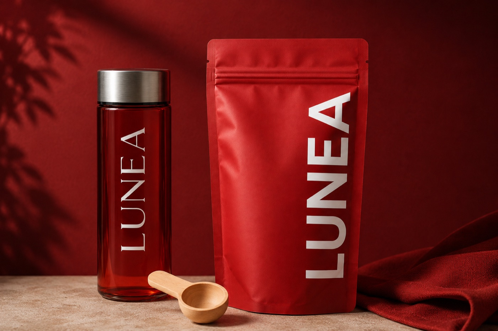

FAQ
Les réponses utiles avant de commencer LUNEA.
Préparation, cure, commande, ingrédients et précautions : cette page rassemble les questions fréquentes pour comprendre le rituel.

Est-ce que LUNEA est un médicament ?
Non. LUNEA est une boisson à base de plantes. Elle ne se substitue pas à un traitement médical et ne remplace pas l'avis d'un professionnel de santé.
Quand commencer une cure LUNEA ?
Vous pouvez l'intégrer en rituel quotidien, ou commencer quelques jours avant les règles et poursuivre pendant la période sensible. La régularité est le point le plus important.
Peut-on boire LUNEA chaud ou froid ?
Oui. La poudre peut être mélangée dans de l'eau chaude ou froide selon votre préférence.
À qui s'adresse LUNEA ?
Aux femmes qui cherchent une routine végétale pour accompagner le cycle, le confort digestif, la fatigue périodique ou les transitions hormonales.
Quelles précautions prendre ?
En cas de grossesse, allaitement, traitement médical, pathologie ou allergie connue à une plante de la formule, demandez un avis médical avant utilisation.
Comment commander ?
Les boutons de commande ouvrent un email vers contact@luneadrink.com avec l'offre choisie. Une solution de paiement pourra être ajoutée ensuite.
Quels formats sont disponibles ?
LUNEA est proposé en offres 1 mois, 3 mois et 6 mois, afin de choisir entre découverte, installation de routine et cure plus longue.